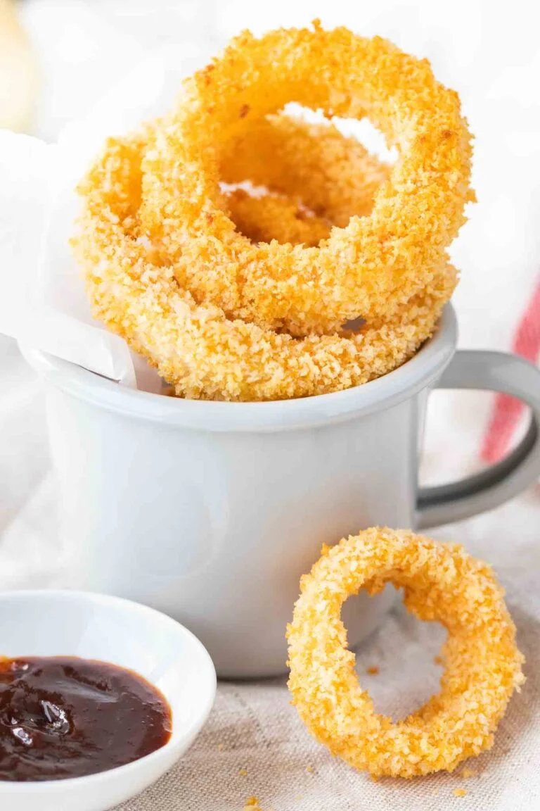

Air fryer Onion Rings

Onion rings - Air Fryer Edition
If you are in mood for some onion rings but want to avoid adding the extra
calories, you came to the right place. This recipe will be using 8 simple
ingredients (9 if you want a little oil) and some other items; most
importantly, an air fryer!
Ingredients
- ½ cup all-purpose flour
- 1 tsp paprika
- tsp salt, divided
- ½ cup buttermilk, see tips above for making your own
- 3 egg
- 1 cup
- panko breadcrumbs
- 2 Tbsp olive oil
- 1 large yellow sweet onion, sliced
- ½-inch thick and separated into rings ▢Oil Spray, optional
Steps
-
You need 4 shallow bowls or deep plates. In the first one combine flour, paprika, and ½ tsp salt. In the second combine buttermilk (or milk and vinegar/lemon juice) and egg, then add ¼ cup of the flour mixture from the first bowl. In the third combine panko breadcrumbs, ½ tsp salt and olive oil with a fork, until the oil is evenly distributed. Put half of the panko in a fourth bowl so you can switch to the second part after the first got sticky.
-
Pat dry the onion rings with paper towels to remove excessive moisture. Using a fork, dredge the onion rings in the flour mixture, drop them in the buttermilk mixture and then dredge them in the panko mixture. (TIP: Freeze the breaded onion rings for 15 minutes on a baking sheet, this helps the panko mixture to stick better.)
- Spray Air Fryer Basket with oil spray. Place onion rings in a single layer in the Air Fryer basket. You can place smaller rings inside bigger rings if necessary, just make sure there is space between them.
- Cook at 400°F until golden brown and crispy, about 11-15 minutes. Spray with some cooking spray after about 6 minutes. You don't need to turn the onion rings.
- Carefully lift out the onion rings with a cookie spatula or fork and serve.
Go back to Main Page